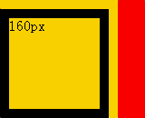
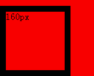

根据 W3C CSS2.1 规范中的描述，'clear' 特性表明了一个元素的框的哪一边（left | right）不可以和一个先前的浮动框相邻。'clear' 特性并不考虑该元素内部或其他 block formatting context 中的浮动。'clear' 特性所带来的清理（Clearance）被当做一个元素 'margin-top' 之上的空白区域，它在垂直方向推动元素（通常是向下），越过浮动。
关于 'clear' 特性的更多信息，请参考 CSS2.1 规范 9.5.2 Controlling flow next to floats: the 'clear' property。
IE6 IE7 IE8(Q) 中，使用 'clear' 特性清除浮动后，浮动元素的容器若没有触发 hasLayout，则其背景将会丢失。
此现象不会导致大的布局问题，但会导致元素的背景出现异常，影响视觉效果。
| IE6 IE7 IE8(Q) |
|---|
设置了 'clear' 特性的元素通常被防止在容器内，用来清理容器内的浮动，使容器的高度可以自动适应浮动元素的高度而不再是 0。
分析以下代码：
<div id="outer_cont" style="background:gold;">
<div id="inner_cont" style="background:red;">
<div style="float:left; border:10px solid black; display:inline; margin:10px 10px 0 0;">
<div id="inner_float" style="width:100px; height:100px;">FLOAT</div>
</div>
<div style="clear:left;"></div>
</div>
</div>
<script>
var outer_cont = document.getElementById("outer_cont");
var inner_float = document.getElementById("inner_float");
var width = 160;
var interval = 40;
var thisCall = null;
(function () {
inner_float.innerHTML = outer_cont.style.width = width-- + "px";
(width < 80) && (width = 160);
(((width >= 125 && width <= 135) || width == 80) && (interval = 200)) || (interval = 40);
thisCall = arguments.callee;
setTimeout(function () { thisCall() }, interval);
})();
</script>
测试代码中，最外层是一个金色 DIV 容器【outer_cont】，内部包含一个没有设置 'width' 和 'height' 特性以及没有 'border'、'margin'、'padding' 的 DIV 元素【inner_cont】，【inner_cont】的内部包含了一个左浮动元素【inner_float】及一个设置了 'clear' 特性的清除元素。
其中，为了消除 IE6(Q) IE7(Q) IE8(Q) 的 "width/height的作用位置与其他浏览器的不同" ，左浮动元素的没有显式地设定宽度，其宽度为 shrink-to-fit 其 100x100 的子元素的宽度，并且其四周各有 10px 黑色边框，上边和右边各有 10px 的外边距，则其 margin-box 的尺寸为 130x130。
通过 JavaScript 脚本动态调整【outer_cont】的宽度，并将这个宽度实时显示在【inner_float】中。
在各浏览器中效果如下：
| IE6 IE7(Q) IE8(Q) | IE7(S) | IE8(S) Firefox Chrome Safari Opera |
|---|---|---|
|  |  |
使丢失背景的容器触发 IE 浏览器特有的 hasLayout，如 'zoom:1'，或者设置宽度和高度。
| 操作系统版本: | Windows 7 Ultimate build 7600 |
|---|---|
| 浏览器版本: |
IE6 IE7 IE8 Firefox 3.6.3 Chrome 5.0.371.0 dev Safari 4.0.5 Opera 10.51 |
| 测试页面: | clear_background.html |
| 本文更新时间: | 2010-07-19 |
float 浮动 hasLayout Background 背景 clear 清除